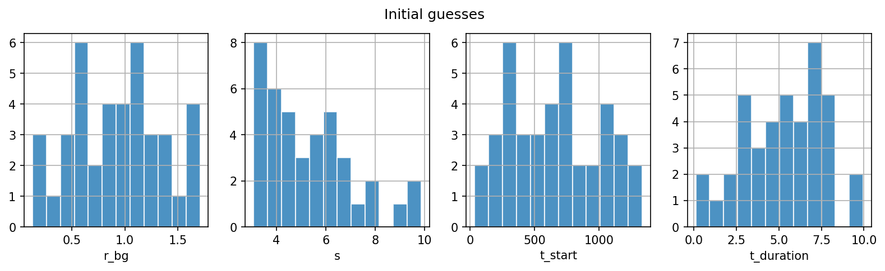

Lab 10: Bayesian Analysis II#
For the class on Wednesday, February 19th
A. Running MCMC with emcee#
In this lab we will do a full MCMC inference for the problem presented in the previous lab.
We will not be writing our own MCMC code. Instead, we will simply use the emcee package.
The emcee package implements the affine-invariant ensemble sampling algorithm proposed by
Goodman & Weare (2010).
This algorithm is based on the classical Metropolis–Hastings algorithm,
but it runs multiple chains at once, and uses the positions of other walkers when proposing the jump.
This algorithm reduces the autocorrelation time compared to the plain Metropolis–Hastings algorithm.
For more details, please refer to Foreman-Mackey, Hogg, Lang & Goodman (2012).
For the full documentation of emcee, please refer to this link (but you won’t need it for this lab though).
# Import packages used in this lab
import numpy as np
import scipy.stats
import matplotlib.pyplot as plt
import requests
import pandas as pd
from multiprocessing import Pool
import emcee
import emcee.autocorr
import corner
A1. The likelihood function#
Our first step is of course to construct the likelihood function, which you have already done in Lab 9.
But here we need to make a few technical modifications to the code so that it can be used with emcee:
We will combine the four parameters into one single argument in the function’s call signature, but we can easily unpack these parameters.
We will also modify the log-likelihood function to ensure it never returns a NaN (not-a-number) value.
emceedoes not like NaNs well, so the log-likelihood should return-np.infinstead.
# Load the observed data
data = np.fromstring(requests.get("https://yymao.github.io/phys7730/lab9_data.txt").text, sep="\n")
# Define total_time (24 hours in minutes)
total_time = 1440
# Define the log-likelihood function
def log_likelihood(theta, data):
r_bg, s, t_start, t_duration = theta # unpack the parameters
expected_total = r_bg * total_time + s * r_bg * t_duration
with np.errstate(divide="ignore", invalid="ignore"): # suppress numpy warnings
log_p_outside = np.log(r_bg / expected_total)
log_p_during = np.log(r_bg * (1 + s) / expected_total)
data = np.ravel(data)
N_total = len(data)
N_during = np.count_nonzero((data >= t_start) & (data < t_start + t_duration))
N_outside = N_total - N_during
# These cases will result in a NaN log-likelihood, so we need change it to -inf
if expected_total <= 0 or np.isnan(log_p_outside) or np.isnan(log_p_during):
return -np.inf
return (
scipy.stats.poisson.logpmf(N_total, expected_total)
+ N_during * log_p_during
+ N_outside * log_p_outside
)
A2. The (flat) prior function#
Let’s start with just flat priors for all parameters. However, even though we are using flat priors, we still need to implement some bounds on the parameters. These bounds are necessary to prevent the MCMC chains from wandering into to regions of parameter space that:
are not physically meaningful, or
do not impact the likelihood function.
Here are the bounds we will use for the four parameters:
\(r_{\text{bg}} \geq 0\),
\(s \geq 0\),
\(-10 \leq t_{\text{start}} \leq 1440\), and
\(0 \leq t_{\text{duration}} \leq 1440\).
📝 Questions (A2):
For each parameter, are the bounds listed above to avoid non-physical regions or to avoid entering regions that do not have an impact on the likelihood function? Briefly explain your answer.
// Add your answer to Part A2 here
# This is our flat prior function
def log_prior_flat(theta):
r_bg, s, t_start, t_duration = theta
if r_bg < 0 or s < 0 or t_start < -10 or t_start > total_time or t_duration < 0 or t_duration > total_time:
return -np.inf
return 0
# This is our log-posterior function
def log_posterior_flat_priors(theta, data):
return log_prior_flat(theta) + log_likelihood(theta, data)
A3. Initial guesses#
Now we are almost ready to run the MCMC!
Before we start, we will need to provide some initial guesses to start these walkers. As we discussed, it’s a good idea to have each walker start at a different location in parameter space. This way we can explore the parameter space more efficiently. To this end, we will sample from some distributions to get these initial guesses.
The distributions that we use to sample the initial guesses are not super important, as long as they can result in some reasonable initial guesses that span the interesting regions of our parameter space. They also do not need to match the prior distributions.
The cell below will generate the initial guesses for the walkers and also plot the histogram of the initial guesses for each parameter.
nwalkers = 40 # number of walkers
# generate initial guess
r_bg_0 = scipy.stats.truncnorm(-2, 3, loc=1, scale=0.5).rvs(size=nwalkers)
s_0 = scipy.stats.expon(loc=3, scale=2).rvs(size=nwalkers)
t_start_0 = scipy.stats.uniform(-10, 1440).rvs(size=nwalkers)
t_duration_0 = scipy.stats.truncnorm(-2, 3, loc=5, scale=2.5).rvs(size=nwalkers)
p0 = np.column_stack([r_bg_0, s_0, t_start_0, t_duration_0])
fig, ax = plt.subplots(ncols=4, figsize=(13, 3), dpi=150)
for ax_this, p0_this, label in zip(ax, p0.T, ["r_bg", "s", "t_start", "t_duration"]):
ax_this.hist(p0_this, bins=12, alpha=0.8, edgecolor="w")
ax_this.set_xlabel(label)
ax_this.grid(True)
fig.suptitle("Initial guesses")
Text(0.5, 0.98, 'Initial guesses')

A4. Running the MCMC#
The cell below now actually runs the MCMC.
Here emcee.EnsembleSampler defines the sampler object, which contains the information
about the posterior function, the number of walkers, and the number of parameters.
The run_mcmc method then actually runs the MCMC chains for a given number of steps.
This cell is going to take a while to run.
npara = p0.shape[1] # number of parameters
nsteps = 10000 # number of steps per walker
with Pool(4) as pool:
sampler = emcee.EnsembleSampler(nwalkers, npara, log_posterior_flat_priors, args=(data,))
sampler.run_mcmc(p0, nsteps, progress=True)
A5. Inspecting the MCMC chains#
Now we are going to inspect our MCMC run. We will first print out the acceptance rate for each walker. Then we will pick a specific walker and make the trace plot for each parameter.
🚀 Tasks and Questions (A5):
Pay attention to the acceptance rate printed below (and the histogram). What is the typical acceptance rate? Do you spot a few walkers with very low acceptance rates?
In the second cell below (the one that makes trace plots), check a few different walkers with different acceptance rates. What do you observe in these trace plots? What’s the difference between the walker with a typical acceptance rate and the one with a very low acceptance rate?
What’s the burn-in period that you would choose for this MCMC run? Would you choose the same burn-in period for all walkers? Does the burn-in period depend on the walker’s acceptance rate?
// Add your answer to Part A5 here
# Print out the acceptance fraction for each walker (with the walker index shown)
pd.Series(sampler.acceptance_fraction)
fig, ax = plt.subplots(dpi=150)
ax.hist(sampler.acceptance_fraction, bins=20, edgecolor="w", alpha=0.8)
ax.set_xlabel("Acceptance fraction")
ax.set_ylabel("Number of walkers per bin")
ax.grid(True);
walker_index = 24 # change this number to see different walkers
fig, ax = plt.subplots(4, 1, sharex=True, figsize=(11, 6), dpi=150, tight_layout=True)
for ax_this, p, label in zip(ax, sampler.get_chain()[:,walker_index,:].T, ["r_bg", "s", "t_start", "t_duration"]):
ax_this.plot(p, color="C0")
ax_this.grid(True)
ax_this.set_xlim(0, nsteps)
ax_this.set_ylabel(label)
A6. A corner plot of the posterior distribution#
Finally, we will make a corner plot to visualize the posterior distribution of the parameters.
Before we do so, there’s a few things to do:
We should remove walkers that have very low or very high acceptance rates, as those walkers may not be representative of the posterior distribution.
We need to remove the burn-in period from our chains.
We should apply thinning to our chains to reduce the autocorrelation between samples.
🚀 Tasks (A6):
In the first cell below, we will remove the walkers with very low acceptance rates. Based on your observation in Part A5, choose a threshold for the acceptance rate to remove walkers with acceptance rates below this threshold.
# Create a mask that can be used to select the good walkers
good_walkers = (sampler.acceptance_fraction >= ...) # TODO: change ... with a threshold value
# Check the autocorrelation time for each parameter
emcee.autocorr.integrated_time(sampler.get_chain(discard=1000)[:,good_walkers,:], quiet=True)
You may see a warning that the chain is too short. That’s probably true, especially if you did not remove all the bad walkers. Typically, we will choose a thinning step that is about half of the autocorrelation time
Now, let’s re-sample our chain with appropriate thinning and burn-in removal, and then make the corner plot.
In the cell below:
The
discardargument is used to remove the burn-in period (skip the firstdiscardsteps),The
thinargument is used to thin the chains (keep only everythin-th step).The
good_walkersvariable is used to select only the walkers with an acceptance rate between 0.2 and 0.8.
🚀 Tasks (A6):
2. In the cell below, choose some values for discard and thin that you think are appropriate.
# Sample from the MCMC chains, with only good walkers, skipping burn-in, and thinning
results = sampler.get_chain(discard=..., thin=...)[:,good_walkers,:].reshape(-1, npara) # TODO: change ... with appropriate values
# The `results` variable is an n-by-4 array, where n is the number of samples we finally kept
results.shape
We will now use the corner package to make the corner plot.
You won’t need the advanced features of the corner package in this lab.
But for your future references, here’s corner documentation.
# Make the corner plot
fig = corner.corner(
results,
labels=["$r_\\mathrm{bg}$", "$s$", "$t_\\mathrm{start}$", "$t_\\mathrm{duration}$"],
quantiles=scipy.stats.norm.cdf([-1, 0, 1]),
show_titles=True,
title_kwargs={"fontsize": 14},
label_kwargs={"fontsize": 14},
)
plt.show()
plt.close(fig)
📝 Questions (A6):
Briefly discuss what you observed from the corner plot. In particular, discuss the following:
Based on the corner plot, what would you conclude about the observed data?
Compare the corner plot with the maximum a posteriori estimate that you obtained in Lab 9.
Do you see any potential issues with the MCMC chains based the corner plot?
// Add your answer to Part A6 here
B. Choosing priors#
In Part B, we will repeat the MCMC run with more informative priors for the four parameters.
B1. The log-prior functions#
🚀 Question and Task (B1):
Based on our discussion in class, choose a prior distribution for each of the four parameters. Briefly explain your prior choice for each parameter.
Implement the log-prior functions for each parameter based on your choices.
// Add your answer to Part B1 here
def log_prior_r_bg(r_bg):
return 0 # Implement here
def log_prior_s(s):
return 0 # Implement here
def log_prior_t_start(t_start):
return 0 # Implement here
def log_prior_t_duration(t_duration):
return 0 # Implement here
# This is the combined prior function. You don't need to modify this function.
def log_prior_combined(theta):
if log_prior_flat(theta) == -np.inf:
return -np.inf
r_bg, s, t_start, t_duration = theta
prior = log_prior_r_bg(r_bg) + log_prior_s(s) + log_prior_t_start(t_start) + log_prior_t_duration(t_duration)
if np.isnan(prior):
return -np.inf
return prior
# This is our log-posterior function with non-flat priors. You don't need to modify this function.
def log_posterior_nonflat_priors(theta, data):
return log_prior_combined(theta) + log_likelihood(theta, data)
B2. Re-running the MCMC with non-flat priors#
The cell below will run the MCMC with non-flat priors.
The sampler in this case is named sampler_nfp to distinguish it from the previous run.
The cell below will take a while to run.
with Pool(4) as pool:
sampler_nfp = emcee.EnsembleSampler(nwalkers, npara, log_posterior_nonflat_priors, args=(data,))
sampler_nfp.run_mcmc(p0, nsteps, progress=True)
🚀 Tasks (B2):
Now, repeat the analysis from Part A, including making the trace plots and the corner plot.
You can copy the code from Part A. In most cases you just need to replace sampler with sampler_nfp.
# Repeat the MCMC analysis with non-flat priors here
# You can copy the code from Part A. Make sure you edit the copied code to `sampler_nfp` instead of `sampler`
📝 Questions (B2):
Briefly discuss what you observed with the non-flat priors. In particular, discuss the following:
Is there any difference in the MCMC diagnostics such as the acceptance rates and autocorrelation time?
Did the corner plot look different from the one with flat priors?
Did the posterior distribution change significantly?
// Add your answers to Part B2 here
Tip
Submit your notebook
Follow these steps when you complete this lab and are ready to submit your work to Canvas:
Check that all your text answers, plots, and code are all properly displayed in this notebook.
Run the cell below.
Download the resulting HTML file
10.htmland then upload it to the corresponding assignment on Canvas.
!jupyter nbconvert --to html --embed-images 10.ipynb